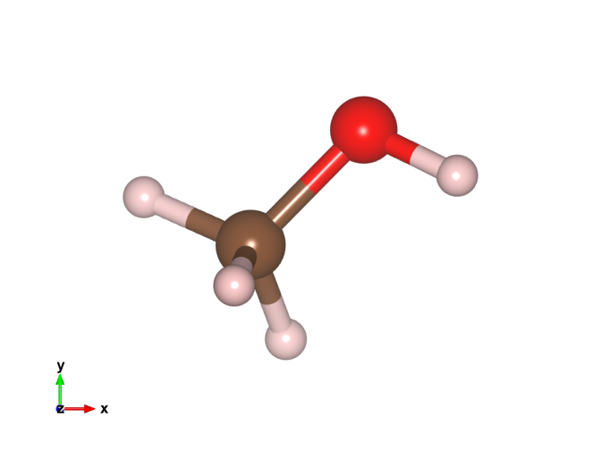
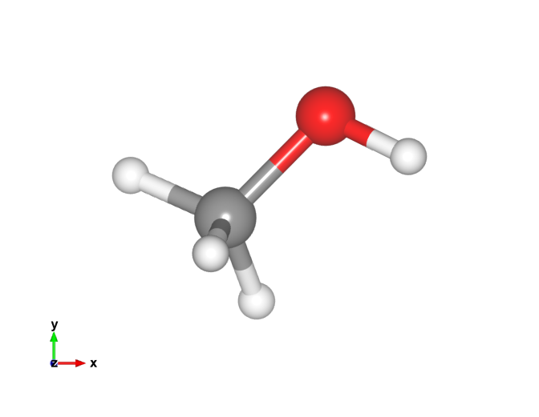

Changing default atom colors in VESTA to ASE/Jmol colors
Vesta is a 3D visualization package for atomic models, volumetric data like charge densities, etc. I mostly use the ase-gui for visualization because it can be automated in python (and often render the images with povray), but sometimes Vesta is useful for plotting things like charge density differences 1, or for making more sophisticated images showing bonds, polyhedra, etc. The issue is that ase-gui and Vesta use different colors for the atoms which lead to inconsistent colors if one uses both. Here is a methanol molecule with the old VESTA colors.

I like the ASE colors, so here I modify the VESTA color list to be consistent with ASE. To do this we need to modify the elements.ini file, located at VESTA/VESTA.app/Contents/Resources on my Mac (the relative path in the directory is probably different on my linux machine).
Here is what the structure of the file looks like
head ../files/elements.ini
1 H 0.46 1.20 0.200 1.00000 0.80000 0.80000 1 D 0.46 1.20 0.200 0.80000 0.80000 1.00000 2 He 1.22 1.40 1.220 0.98907 0.91312 0.81091 3 Li 1.57 1.40 0.590 0.52731 0.87953 0.45670 4 Be 1.12 1.40 0.270 0.37147 0.84590 0.48292 5 B 0.81 1.40 0.110 0.12490 0.63612 0.05948 6 C 0.77 1.70 0.150 0.50430 0.28659 0.16236 7 N 0.74 1.55 1.460 0.69139 0.72934 0.90280 8 O 0.74 1.52 1.400 0.99997 0.01328 0.00000 9 F 0.72 1.47 1.330 0.69139 0.72934 0.90280
The first three columns after the elements seem to be values for the atomic, van der Waals, and ionic radii. The next three numbers are the colors. They are basically rgb colors normalized by 255. All we have to do is to replace these numbers by the corresponding jmol colors. Here is some code that does that.
from ase.data.colors import jmol_colors
with open('../files/elements.ini') as f:
lines = f.readlines()
with open ('../files/new_elements.ini', 'w') as f:
for line in lines:
num, sym, r1, r2, r3, c1, c2, c3 = line.split()
if sym is 'D':
# Rewrite the old line
new_line = [num, sym, r1, r2, r3, c1, c2, c3, '\n']
f.write(line)
continue
if sym is 'XX':
new_c1, new_c2, new_c3 = jmol_colors[0]
else:
new_c1, new_c2, new_c3 = jmol_colors[int(num)]
new_line = [num, sym, r1, r2, r3, new_c1, new_c2, new_c3]
# Get the right pretty printed format with this ugly
# looking command
f.write('''{0:>3} {1:>2} {2} {3} {4} \
{5:1.5f} {6:1.5f} {7:1.5f}\n'''.format(*new_line))
Let's look at the new file to see if it looks correct.
head ../files/new_elements.ini
1 H 0.46 1.20 0.200 1.00000 1.00000 1.00000 1 D 0.46 1.20 0.200 0.80000 0.80000 1.00000 2 He 1.22 1.40 1.220 0.85100 1.00000 1.00000 3 Li 1.57 1.40 0.590 0.80000 0.50200 1.00000 4 Be 1.12 1.40 0.270 0.76100 1.00000 0.00000 5 B 0.81 1.40 0.110 1.00000 0.71000 0.71000 6 C 0.77 1.70 0.150 0.56500 0.56500 0.56500 7 N 0.74 1.55 1.460 0.18800 0.31400 0.97300 8 O 0.74 1.52 1.400 1.00000 0.05100 0.05100 9 F 0.72 1.47 1.330 0.56500 0.87800 0.31400
We can now replace our old file with this one and get the colors we want. You can find the file here.
Here is the new methanol image. That looks a lot more like I'm used to!

Footnotes:
Of course one can also do this using Mayavi in python.